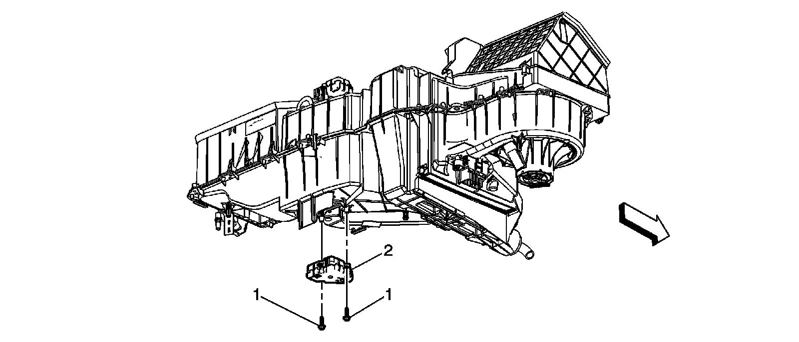
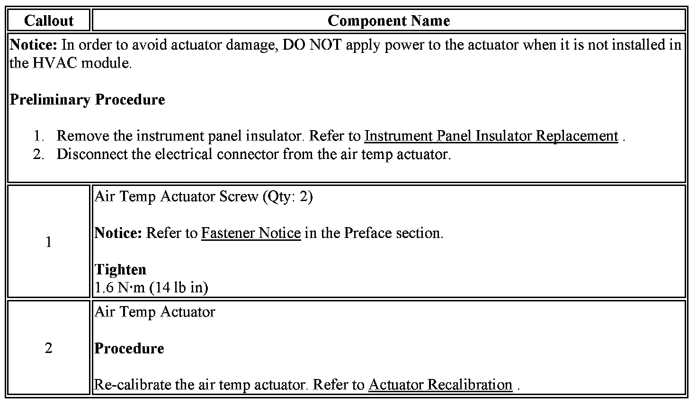

Operation CHARM
: Car repair manuals for everyone.
Home
>>
Cadillac
>>
2007
>>
Escalade ESV AWD V8-6.2L
>>
Repair and Diagnosis
>>
Heating and Air Conditioning
>>
Air Door
>>
Air Door Actuator / Motor
>>
Service and Repair
>>
HVAC System - Manual
>>
Air Temperature Actuator Replacement - Left Side
Air Temperature Actuator Replacement - Left Side
AIR TEMPERATURE ACTUATOR REPLACEMENT - LEFT SIDE

